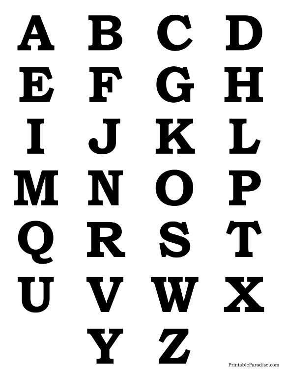

| Name | Alphabet |
| Formaler Name | ABC |
| Anzahl der Bewohner | Schwer zu sagen |
| Alter | ca. 5530 Jahre |
| Existenzstatus | Existierend |

Das Alphabet basiert - unglaublich aber wahr - auf dem lateinischen Alphabet. Später wurden auch andere Alphabete in dieser Welt kanonisiert.
Das Alphabet ist der Ort, an dem die Buchstaben für kurze Zeit verweilen wenn sie sterben oder ihre Kraft verlieren, bevor sie wieder in der Lage sind, einen Körper zu manifestieren und sich in Universum AAA frei herumzubewegen. Jedes Universum, das ein Schreibsystem besitzt, hat ein Alphabetähnliches Geschwisteruniversum, um den Zeichen Kraft zu verleihen, Informationen zu tragen. Sollte ein Zeichen das Alphabet betreten, weil es seine Kraft verloren hat, fehlen für kurze Zeit alle Instanzen dieses Buchstabens im Geschwisteruniversum, dieser Zustand dauert jedoch meist nur wenige Sekunden an, bevor jenes Zeichen wieder genug Kraft hat.
ABC kann nicht von Wesen bereist werden, die auf Masse basieren, d.h. jedes Wesen im uns bekannten Universum bis auf Buchstaben (Und einige Sonderfälle wie Hadschi Halef Omar). Zudem ist es in mehrere Sektionen aufgeteilt, eine fürs lateinische, eine fürs kyrillische, eine fürs griechische Alphabet etc. Der Sektor direkt nach einem Alphabet mit Groß- und Kleinschriebung oder Ähnlichem ist immer mit diesen belegt, im Fall vom lateinischen die Kleinbuchstaben (Denen kein Körper geschenkt wird). Es sind noch viele, viele Plätze frei, denn eine Sektion wird erst dann benutzt und den Zeichen wird erst dann vom Oberboss Leben geschenkt, wenn mindestens 10 Personen eine Sprache, die in diesem Alphabet geschrieben wird, als Muttersprache sprechen, und sie in diesem Alphabet schreiben. Allerdings werden gewisse Sonderzeichen, egal wie sehr sie benutzt werden, nicht ins Alphabet aufgenommen, z.B.: Ä, Ö, Ü, Á, È, ß,... Das bedeutet, ihnen wird ein irdischer Körper geschenkt, allerdings müssen sie lang nicht so hart arbeiten und sterben einfach, statt ins Alphabet zu kehren. Sollte dies der Fall sein, übernimmt der Buchstabe aus dem selben Alphabet mit dem ähnlichsten Laut oder der, der ganz klar die Inspiration für das Zeichen war, die Aufgabe an sich. Dieser Buchstabe ist fortann in der Lage, ein Kind zu gebären, welches Ihm die Extraarbeit wieder abnimmt und aussehen wird wie das gestorbene Zeichen, jedoch keine Erinnerungen hat. Diese Geburt kann nicht in ABC stattfinden.
Ein Sektor ist einfach nur leer und weiß, abgetrennt von einer unendlich hohen, schwarzen Mauer - zumindest würde er so aussehen, wenn man ihn für uns verständlich visalisieren würde. Da eine Dimension, basierend nur auf Text, schwer für uns zu verstehen ist, kann man es leider nicht mit 100%-iger Sicherheit sagen.
Als das erste Alphabet entstand, verlinkte der Oberboss AAA mit ABC, um geschriebene Sprache erst zu ermöglichen. Seit damals sind viele Sprachen, Alphabete und Zeichen gekommen und gegangen, heute ist das "wichtigste" das lateinische, mit folgenden Mitgliedern: A, B, C, D, E, F, G, H, I, J, K, L, M, N, O, P, Q, R, S, T, U, V, W, X, Y und Z. Der Sektor daneben wird bewohnt von a, b, c, d, e, f, g, h, i, j, k, l, m, n, o, p, q, r, s, t, u,v, w, x, y und z.
Weitere Alphabete sind:
Das griechische, mit folgenden Mitgliedern: Α, Β, Γ, Δ, Ε, Ζ, Η, Θ, Ι, Κ, Λ, Μ, Ν, Ξ, Ο, Π, Ρ, Σ, Τ, Υ, Φ, Χ, Ψ, Ω; sowie den zugehörigen Kleinbuchstaben im nebenliegenden Sektor
Das kyrillische, mit folgenden Mitgliedern: А, Б, В, Г, Д, Е, Ё, Ж, З, И, Й, К, Л, М, Н, О, П, Р, С, Т, У, Ф, Х, Ц, Ч, Ш, Щ, Ъ, Ы, Ь, Э, Ю, Я; sowie den zugehörigen Kleinbuchstaben im nebenliegenden Sektor
Das arabische, mit folgenden Mitgliedern: ش، س، ز، ر، ذ، د، خ، ح، ج، ث، ت، ب، ا، ي، و، ه، ن، م، ل، ك، ق، ف، غ، ع، ظ، ط، ض، ص، ى، ئ، ؤ، ة،, vielleicht paar mehr oder weniger, ich kann kein arabisch.
Das armenische
Das georgische
Hangul
Hanzi
Das hebräische
Die Kanadische Silbenschrift
Das äthiopische
Den Indischen Schriftenkreis
Thaana
Das mongolische
Tifnagh
Osage
Die Cherokee-Silbenschrift
Kana
Kanji
... sowie viele, viele weitere.